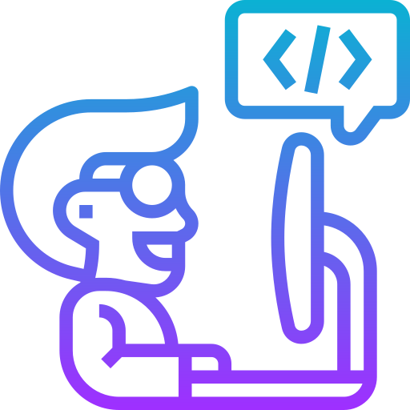

Desarrollo Frontend

El frontend es la parte de una aplicación web que interactúa directamente con el usuario. Es la interfaz gráfica de usuario (GUI) que se ve en el navegador web. El frontend se encarga de mostrar la información del backend al usuario y de permitirle interactuar con ella.
Los fundamentos del desarrollo frontend son los lenguajes de programación y las tecnologías que se utilizan para crear aplicaciones web. Los principales lenguajes de frontend son HTML, CSS y JavaScript.
**HTML** (HyperText Markup Language) es el lenguaje de marcado que se utiliza para estructurar el contenido de una página web. Define la estructura de la página, la ubicación de los elementos y el tipo de contenido que se mostrará.
**CSS** (Cascading Style Sheets) es el lenguaje de estilo que se utiliza para dar formato al contenido de una página web. Define el aspecto visual de la página, incluyendo el color, la fuente, el tamaño de los elementos y la disposición de los elementos en la página.
**JavaScript** es un lenguaje de programación que se utiliza para agregar interactividad a las páginas web. Permite crear animaciones, menús desplegables, formularios interactivos y otros elementos interactivos.
Además de estos lenguajes básicos, existen otras tecnologías y herramientas que se utilizan en el desarrollo frontend, como:
* Frameworks: los frameworks son conjuntos de código prefabricado que ayudan a los desarrolladores a crear aplicaciones web más rápido y fácilmente. Algunos frameworks populares de frontend incluyen React, Angular y Vue.js.
* Bibliotecas: las bibliotecas son conjuntos de código que proporcionan funciones específicas, como el manejo de imágenes, el procesamiento de datos o la creación de gráficos. Algunas bibliotecas populares de frontend incluyen jQuery, Bootstrap y Font Awesome.
**Los fundamentos del desarrollo frontend son esenciales para crear aplicaciones web atractivas e interactivas.**